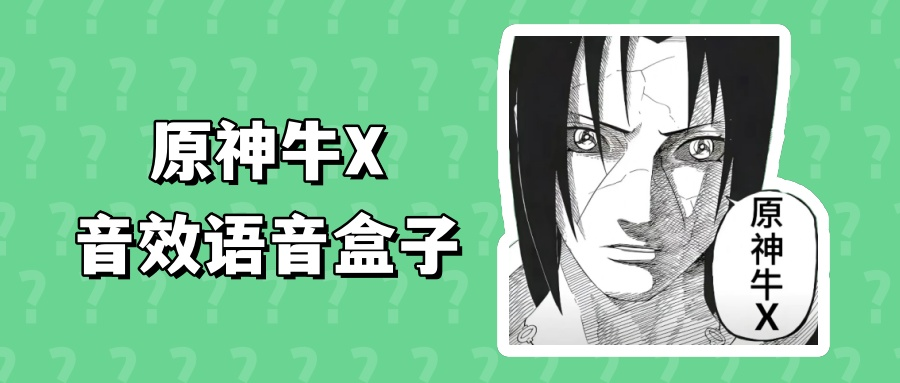

原神牛X语音盒

音频预加载中请稍等...
如果长时间卡住 请更换浏览器或刷新页面
如果长时间卡住 请更换浏览器或刷新页面
音效区域
- 原神牛X
- 原神？
- 一点也不牛X
- 原神不牛X
- 敢说原神不牛X？
- 现在知道多牛X了吧
- 我错了
- 原神牛X！
- 原神才牛X！
- 原神玩家也太逊了吧
- 原神一点都不牛X
- 这么说起来你很勇嘛
- 还敢说原神不牛X？
- 开玩笑我超勇的好吧
- 我的原神可是60级
- 哦哟 还是个大佬啊
- 要不带带我？
- 原神不牛X！！
- 我不玩行了吧！！
功能设置
使用帮助
欢迎关注马里奥顶蘑菇Mario哔哩哔哩UID:1644972548抖音号：mushroommario快手号：5174970934微博：马里奥顶蘑菇Mario公众号：顶菇趣软件
点击按钮播放音效或音乐。请确保设备音量适中。点击"设置延迟播放"按钮，设置延迟时间（毫秒）。点击"设置自动播放"按钮，启用自动播放功能。点击"设置单击循环播放"按钮，启用单击循环播放功能。点击"停止所有音效/音乐"按钮，暂停当前播放的音频。
安卓QQ变音教程（点击查看）
这里是QQ变音教程的文字说明。以小米手机为例子，此功能仅支持有小屏功能的系统。游戏的话不支持因为官方做了限制对面听不到。


安卓微信变音教程（点击查看）
这里是微信变音教程的文字说明。以小米手机为例子，此功能仅支持有小屏功能的系统。游戏的话不支持因为官方做了限制对面听不到。

安卓苹果手机没声音（点击查看）
请把手机的静音模式关闭即可，确保音量适中。